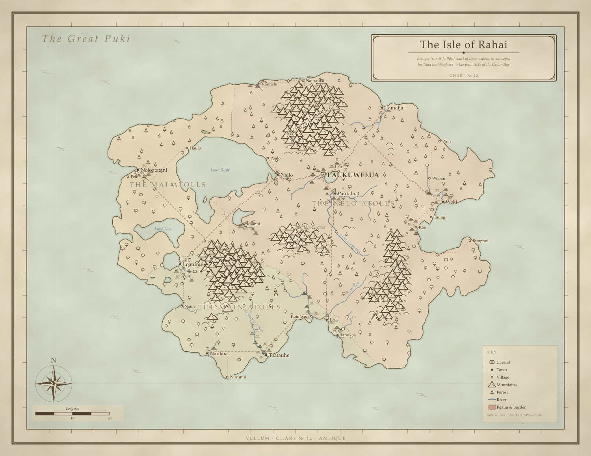
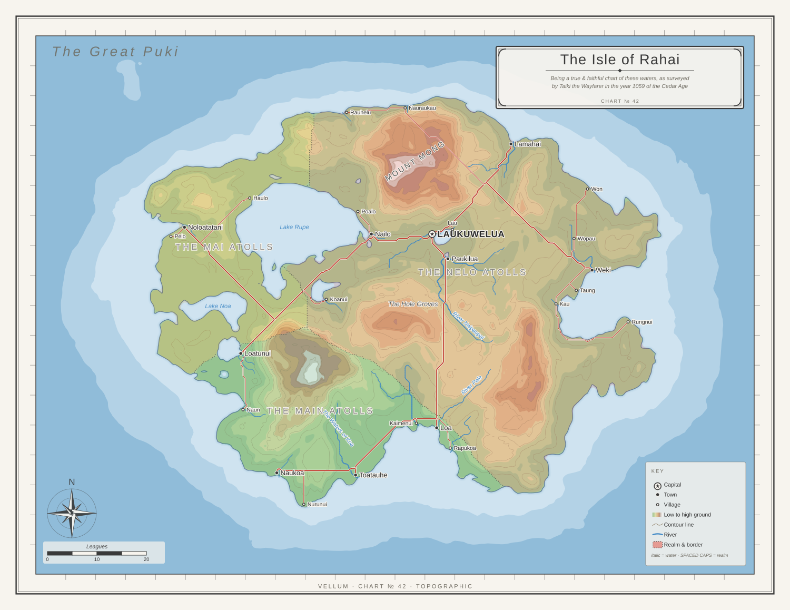
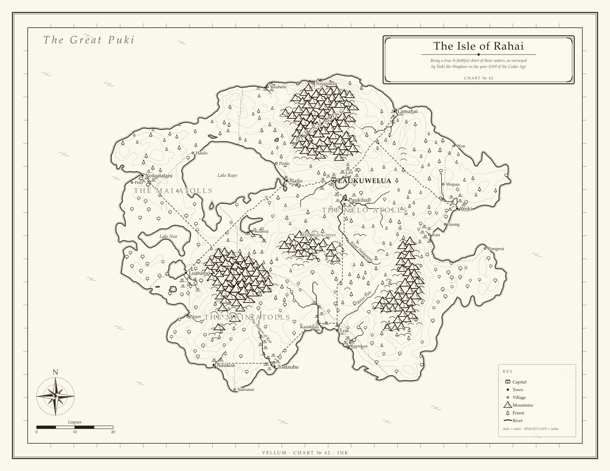
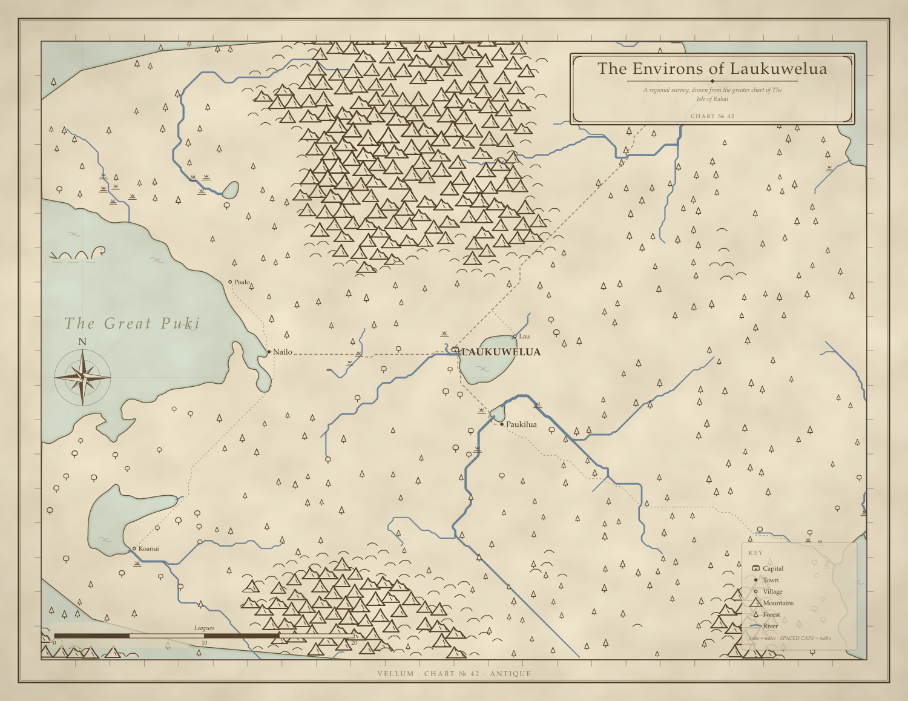
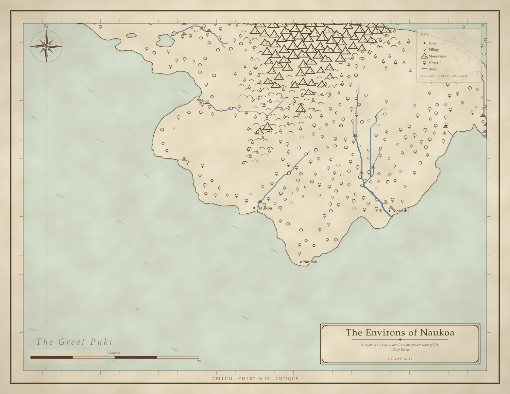

Being a true & faithful chart of these waters, as surveyed by Taiki the Wayfarer in the year 1059 of the Cedar Age
VELLUM · CHART № 42





The Nelo Atolls guards its mountain passes jealously. The Main Atolls mints a thinner coin. The Mai Atolls has not forgiven the last war.
| Place | Rank | Realm | Travelers' notes |
|---|---|---|---|
| Laukuwelua | Capital | The Nelo Atolls | Its walls were raised thrice and breached only once. Watchmen call the hours from its gate-towers through the night. |
| Lamahai | Town | The Nelo Atolls | A breakwater of grey stone shelters boats laden with dried fish. |
| Loa | Town | The Main Atolls | The tide leaves the inner moorings dry by noon. |
| Loatunui | Town | The Main Atolls | Its quays smell of coconut oil and old rope. |
| Nailo | Town | The Nelo Atolls | Nets hang drying along every seawall and railing. |
| Naukoa | Town | The Main Atolls | Chandlers along the front sell feather cloaks by the bale. |
| Noloatatani | Town | The Mai Atolls | Foreign flags are common at its wharves in the trading season. |
| Paukilua | Town | The Nelo Atolls | Half the town turns out when a sail crests the horizon. |
| Toatauhe | Town | The Main Atolls | Sailors swear the spray here tastes of frangipani. |
| Weki | Town | The Nelo Atolls | A crooked light leans over the harbor mouth. |
| Haulo | Village | The Mai Atolls | The harbor bell rings whenever fog comes off the water. |
| Kaimenui | Village | The Main Atolls | Its warehouses hold obsidian against the winter freight. |
| Kau | Village | The Nelo Atolls | Gulls quarrel over the offal thrown from the cleaning sheds. |
| Koanui | Village | The Nelo Atolls | Ships water here before standing out to the deep. |
| Lau | Village | The Nelo Atolls | Pilots here will see a ship past the shoals for a fair price. |
| Naun | Village | The Main Atolls | Chandlers along the front sell palm wine by the bale. |
| Nauraukau | Village | The Nelo Atolls | A breakwater of grey stone shelters boats laden with black pearls. Reed-cutters work the fens at low water. |
| Nurunui | Village | The Main Atolls | Its quays smell of copra and old rope. |
| Pelo | Village | The Mai Atolls | A crooked light leans over the harbor mouth. |
| Poalo | Village | The Nelo Atolls | The harbor bell rings whenever fog comes off the water. |
| Rapukoa | Village | The Main Atolls | Gulls quarrel over the offal thrown from the cleaning sheds. |
| Rauhelu | Village | The Nelo Atolls | Nets hang drying along every seawall and railing. |
| Rungnui | Village | The Nelo Atolls | Sailors swear the spray here tastes of palm wine. |
| Taung | Village | The Nelo Atolls | Pilots here will see a ship past the shoals for a fair price. |
| Won | Village | The Nelo Atolls | The tide leaves the inner moorings dry by noon. |
| Wopau | Village | The Nelo Atolls | Eels from this reach are said to be the realm's finest. |
{kind=link}
{kind=link}